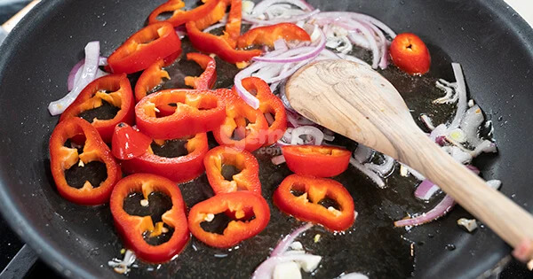
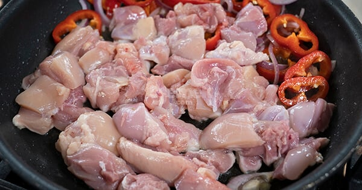
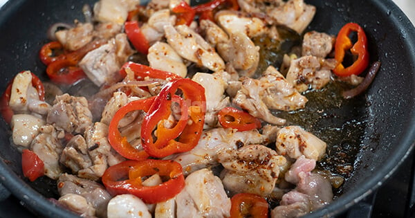
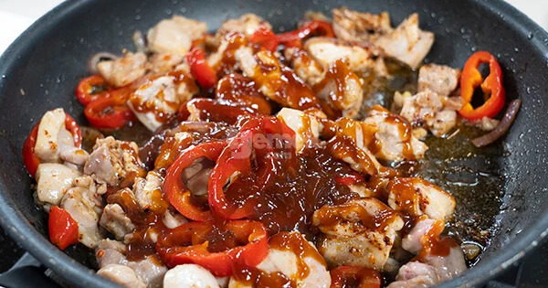
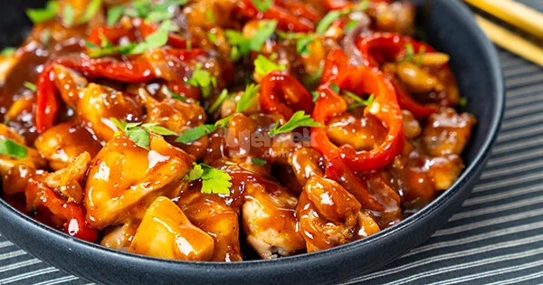

Kaç Kişilik: 4 Kişilik Hazırlama Süresi: 15 Dakika Pişirme Süresi: 20 Dakika
Malzemeler
- 400 gram kemiksiz but eti (iri kuşbaşı kesilmiş)
- 2 adet kapya biber (halka doğranmış)
- 1 adet mor soğan (piyazlık kesilmiş)
- 3 yemek kaşığı sıvı yağ
- 1/2 su bardağı barbekü sos
- 1 çay kaşığı tuz (sos miktarınıza göre değişir)
- 1/4 çay kaşığı karabiber
- 1/2 çay kaşığı pul biber
- 1 tutam kıyılmış maydanoz
Üzeri İçin:
Püf Noktası
Dış tarafları daha çıtır kaplamalı tavuklar yapmak isterseniz biraz baharat eklediğiniz un ya da nişasta
ile tavuklarınızı bulayabilir derin yağda kızarttıktan sonra barbekü sos ile buluşturabilirsiniz.
Nasıl Yapılır?
- Tavaya önce yağı ardından soğanları ekleyin. Biraz kavurduktan sonra biberleri ilave edin.
 - Biberleri de biraz kavurduktan sonra tavukları ekleyin.
 - Tavuklar ile birlikte sebzeleri güzelce kavurun. Tuzu, karabiberi ve pul biberi ekleyin.
 - Barbekü sosu ekledikten sonra sadece 1-2 kez çevirin ve ocaktan alın.
 - Yemeğiniz hazır!
